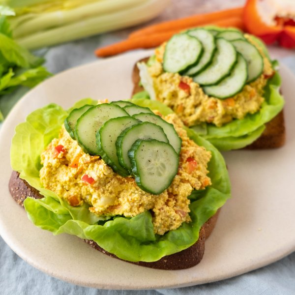

Open-Faced Curried Tofu Salad Sandwiches with Lettuce & Cucumber

Total Time
30 min
Nutrition (Per Serving)
661.4 kcalCalories
31.3 gProtein
46 gCarbs
42.3 gFat
Full nutrition table
| Calories | 661.4 kcal |
| Total fat | 42.3 g |
| Saturated fat | 4.9 g |
| Trans fat | 0 g |
| Cholesterol | 16.5 mg |
| Sodium | 511.2 mg |
| Carbohydrates | 46 g |
| Fiber | 10.5 g |
| Sugars | 8.5 g |
| Protein | 31.3 g |
| Potassium | 831.4 mg |
| Calcium | 476.3 mg |
| Iron | 7.2 mg |
| Vitamin A | 291 IU |
| Vitamin C | 45.8 mg |
| Vitamin D | 0 IU |
Cookware
Ingredients
- 1 headbutter (Boston) lettuce
- 2 mediumcarrots
- 2 stickscelery
- 1English cucumber
- 2 (12 oz) pkgextra firm tofu
- 2 clovesgarlic
- ¼ cupnutritional yeast flakes
- 1red bell pepper
- 8 sliceswhole grain bread
- black pepper
- curry powder
- Dijon mustard
- extra virgin olive oil
- onion powder
- rice vinegar
- salt
- turmeric, ground
- vegan mayonnaise
Steps
- Cut tofu in half along the long side. Sandwich tofu between clean towels or paper towels and place on a large baking sheet pan. Place a cutting board with something heavy on top and set aside to press out excess water.2 (12 oz) pkg extra firm tofu
- Wash and dry the fresh produce.2 medium carrots
2 sticks celery
1 red bell pepper
1 English cucumber
1 head butter (Boston) lettuce - Place mayo, nutritional yeast, Dijon, vinegar, and spices in a medium bowl; stir to combine the creamy dressing.½ cup vegan mayonnaise
¼ cup nutritional yeast flakes
1 tsp Dijon mustard
1 tsp rice vinegar
4 tsp curry powder
1 ½ tsp salt
1 tsp onion powder
½ tsp turmeric, ground
½ tsp black pepper - Crumble tofu with your fingers into the bowl with the dressing; using a fork, mash to combine the tofu mixture.
- Peel, trim, and coarsely grate carrots; add to the bowl with the tofu mixture.
- Trim and small dice celery; add to the bowl.
- Trim, seed, and small dice bell pepper; add to the bowl. Stir to combine the tofu salad and set aside.
- Preheat oven to broil on high and position rack under the broiler.
- Peel and mince garlic; place in a small bowl along with oil and salt. Stir to combine the garlic oil.2 cloves garlic
2 tbsp extra virgin olive oil
¼ tsp salt - Arrange bread on the baking sheet and drizzle with garlic oil. Place in the oven and broil until golden brown and toasted, 1-2 minutes. Remove from oven.8 slices whole grain bread
- Meanwhile, trim and slice cucumber crosswise into thin rounds.
- Separate lettuce into leaves.
- To serve, divide toast between plates; top with lettuce, tofu salad, and cucumber slices. Season cucumber with salt and pepper. Enjoy!⅛ tsp salt
⅛ tsp black pepper